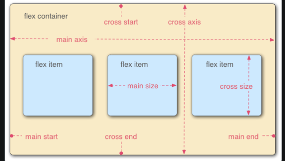

Flexbox is a one-dimensional layout method for arranging items in rows or columns
Items flex (expand) to fill additional space or shrink to fit into smaller spaces.

1) as soon as container display is made flex, default felx direction (row) is applied and and felx item expand in height to fill aditional space because height is not defined for boxes.
uncomment height in box1 selector to notice difference
Flex Box 1
Flex Box 2
Flex Box 3
Flex Box 4
Flex Box 5
Flex Box 6
2) for flex-direction column width is shrinked to fit in defined height of flex container.
Flex Box 1
Flex Box 2
Flex Box 3
Flex Box 4
Flex Box 5
Flex Box 6
*note: above two flex items will shrink in size, upto defined height or width or based on content inside, but won't wrap. To counter this flex box has flex-wrap property.
3) Flex-wrap & flex-flow shorthand : reduce width of website to notice difference
based on flex-direction wrapping of flex items will be done.
*******uncomment different combination of flex-direction & flex-wrap properties to understand******
wrapping happens arounf cross axis and in case of flex-wrap: wrap-reverse; will be from bottom to top or in opposite direction cross axis
Flex Box 1
Flex Box 2
Flex Box 3
Flex Box 4
Flex Box 5
Flex Box 6
go to ->